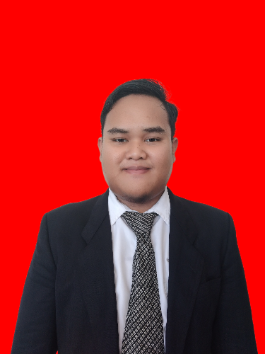

🌙
Currculum Vitae

Biodata Lengkap
Nama
:
Andi Khozin Mubarak
Email
:
akmaznur2802@gmail.com
No. HP
:
085399833542
Alamat
:
Perumahan Bukit Grandmas 2, Blok B4 No. 10, Jl. Borong Sapiri, Kab. Gowa
Pendidikan Terakhir
2020 - 2024
Universitas Handayani Makassar
2017 - 2020
UPT SMAN 2 Sinjai
2014 - 2017
SMPN 6 Sinjai Selatan sekarang UPTD SMPN 23 Sinjai
Pengalaman
CEO/Pendiri
Komunitas Indonesian Moeslim Friends
Divisi Dakwah dan Kaderisasi
Lembaga Dakwah Kampus Forum Komunikasi Mahasiswa Islam Universitas Handayani Makassar
Anggota Biasa
Ceotech Universitas Handayani Makassar
Keahlian
HTML, CSS, JavaScript
PHP & MySQL
Version Control (Git)
Public Speaking & Leadership